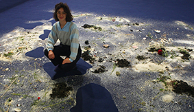

Aux origines, la démesure, faire un enfant.
L’est et l’ouest réunis.
Une plage de coquillages et de fleurs, le sel de mer et de salage réunis.
Fleurs de vie, fleurs de mort.
Venez, je vous en prie.
Arrivée à Bordeaux, un bénévole du festival m’attend dans le Hall 1 de la gare.
Casquette « European Spatial Agency » sur la tête, panneau « Big Bang » à la main.
Il est rejoint par deux femmes qui sortent du même train que moi. Une grande rousse
aux cheveux longs et bouclés, une petite brune avec un carré lisse duquel rien ne dépasse.
Le bénévole, c’est Yannick. Chauffeur pour l’occasion, c’est un ancien commercial
dans le vin qui se dit passionné d’astronomie.
Il a participé à la réalisation d’une image gigantesque, par assemblage de morceaux
de papiers de formats A4, image qui a été vue par l’astronaute Thomas Pesquet depuis
l’espace. C’est une grande fierté pour Yannick, d’avoir été remarqué par ce conquérant
de l’espace.
Il a consigne de nous déposer le plus vite possible à Saint-Médard-en-Jalles, lointaine
banlieue bordelaise, où se déroule le festival « Big Bang », un événement qui conjugue
art et espace. Mais Yannick nous propose de faire un détour, nous dit que l’on doit
garder ça pour nous, qu’il ne faudrait pas que les organisateurs l’apprennent. Il tient
à nous prouver son amitié à travers un accueil chaleureux. Visite insolite de la ville par
les quais dans le 4 x 4 climatisé qui sent la voiture neuve. Miroir d’eau, place, Cité du
Vin au loin, nouveau pont, quartier en complète reconstruction... Virée entrecoupée
par des arrêts aux multiples feux rouges.
La rousse, Anilore, est artiste. Elle doit installer la maquette d’une sculpture dans
l’après-midi, avant l’inauguration du soir.
Yannick lui demande : « c’est pour quand la lune ? »
Elle répond : « 2020, 2021, je ne suis pas à un jour près. »
La brune près de qui je me trouve, une bourgeoise style Sophie Calle (dans l’allure et
l’attitude espiègle), travaille dans la gestion d’entreprises.
Je lui demande : « la lune, de quoi s’agit-il ? »
Elle me répond : « Anilore a pour projet d’envoyer une sculpture sur la lune. »
Anilore continue : « on se rassemble lors de drames : les attentats, les catastrophes
climatiques... Mon projet a pour but de rassembler, c’est une sculpture sur laquelle
seront collectées les empreintes d’un million de mains. On pourra la voir depuis
la terre avec un télescope de base, elle disposera de sources lumineuses, qui seront
comme un appel à dire que tout est possible. Elle sera vivante, comme une fleur,
s’ouvrira pendant le jour lunaire et se fermera pendant la nuit. D’habitude je fais de
la sculpture monumentale, dans mon travail, les choses se pèsent en tonnes. Pour la
lune, ma sculpture devra être très légère, pas plus qu’un kilo cinq. »
Nous appellerons la brune Sophie car j’ai déjà oublié son prénom, celle-ci ajoute :
« pendant le festival vous pourrez donner l’empreinte de vos mains, on les récupère
sur deux iPad ! »
[...]
extrait du texte accompagnant l'installation


La zone périlunaire
Matériaux divers, détecteur de mouvement et lecteur mp3 sur carte arduino,
musique avec la voix de Bertrand Dezoteux, texte imprimé sur feuillet
mulhouse019, biennale de la jeune création contemporaine, parc des expositions de Mulhouse
Juin 2019


-> Beaux Arts magazine, publication Facebook

{kind=link}